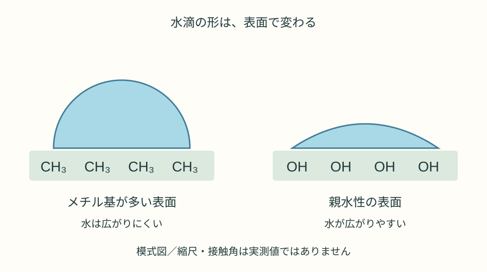
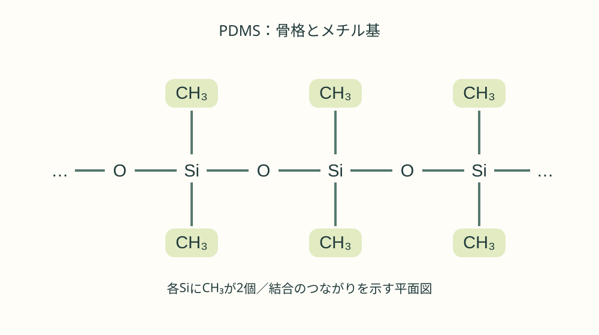
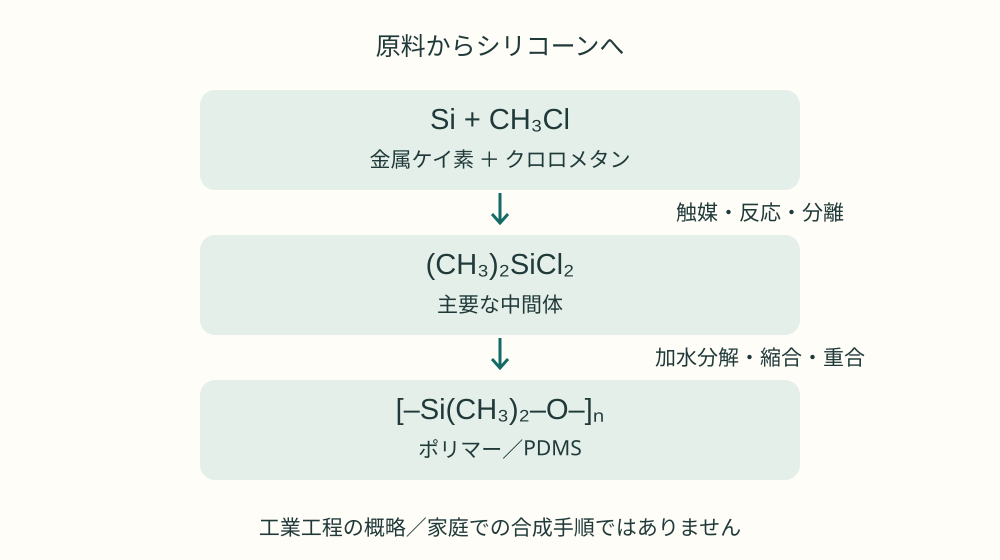

SCIENCE NOTES / K002 / MATERIALS
なぜシリコーンは水をはじく？ メチル基CH₃の科学
炭素1個と水素3個で、水滴の姿はどう変わる？ 小さなメチル基から、シリコーンの原料と製造、身近な観察までをたどります。

01メチル基とは？ CH₃という小さな部品
シリコーンの上では、なぜ水が丸い滴になるのでしょうか。炭素1個と水素3個からなるメチル基（–CH₃）は、その理由を読み解く鍵です。ただし、メチル基は袋に入った単独の原料ではなく、ほかの原子に結合している分子の一部分です。
炭素は通常4本の共有結合を作ります。メチル基では3本が水素につながり、残り1本が酸素やケイ素などにつながります。「–」は結合の線で、負電荷を表す上付きの「⁻」とは違います。CH₃•は反応性の高いメチルラジカルで、材料中のメチル基とは区別します。
メチル基を持つ物質には、メタノール CH₃OH、エタノール CH₃CH₂OH、酢酸 CH₃COOHなどがあります。メタノールやエタノールが水と混ざることからも、CH₃を含むだけで物質全体が撥水性になるわけではないと分かります。OHなど、ほかの部分の働きも重要です。
02なぜ水をはじく？ 表面で起こること
水分子 H₂Oは電荷の偏りを持ち、水分子どうしで水素結合を作ります。一方、メチル基のC–H結合は極性が小さく、メチル基は通常、水と強い水素結合を作りません。そのため、メチル基が多く露出した表面は水との相互作用が弱く、ぬれにくくなる傾向があります。シリコーンの撥水性にもメチル基が寄与します。[1]
これは水を磁石のように押し返す力ではありません。水が表面に広がるよりも、まとまった形を取るほうがエネルギー的に有利になるためです。ぬれやすさの指標の一つが接触角。滴の縁で、固体面と水面の接線が水側に作る角度で、大きいほど一般にぬれにくいと読めます。
表面の凹凸、汚れ、ほかの官能基、加工方法でも結果は変わります。滴が丸くなることと、滴が滑り落ちやすいことも同じではありません。また、撥水は表面のぬれにくさ、防水は水の通過を防ぐ性能です。継ぎ目や穴があれば、撥水材料でも漏水します。
03シリコーンでは、どこに付いている？
代表的なシリコーンであるポリジメチルシロキサン（PDMS）は、ケイ素Siと酸素Oが交互につながる骨格を持ち、各Siにメチル基が2個付いています。[3]
nは繰り返し数を表し、この式では鎖の末端を省略しています。柔軟なSi–O骨格と、外側に現れやすいメチル基の組み合わせが材料の性質につながります。分子鎖の長さや架橋、充填材の違いによって、オイル、ゴム、シーリング材などへ作り分けられます。

シリコンは元素Si、シリカは二酸化ケイ素SiO₂、シリコーンは有機基を持つ高分子材料の一群です。名前は似ていますが別物です。また、メチル基はシリコーンの撥水性で重要ですが、すべての撥水材料に必須ではありません。
04原料は何？ 工場ではどう作る？
代表的な工業ルートでは、シリカから得た金属ケイ素と、メチル基を持つクロロメタンを使います。自由なCH₃を集めるのではなく、化合物中のメチル基をケイ素に組み込むのです。[2][4]
| 物質・化学式 | 工程での役割 |
|---|---|
| シリカ（石英など） SiO₂ | 還元して金属ケイ素Siを得る出発物質 |
| メタノール CH₃OH | クロロメタンを作る出発物質の一つ |
| クロロメタン（塩化メチル） CH₃Cl | Siに結合するメチル基を供給 |
| ジメチルジクロロシラン (CH₃)₂SiCl₂ | PDMSにつながる主要な中間体 |
| 水 H₂O | 加水分解に関わる。続く縮合などでSi–O–Si結合を作る |
クロロメタンを得る反応の一例は次のとおりです。以下の式は物質の収支を示すもので、家庭用の合成手順ではありません。
金属ケイ素とクロロメタンを、銅系触媒を用いる工業反応（直接法）で反応させます。主な目的物の生成は、次の式で表せます。実際には複数のメチルクロロシランができ、蒸留による分離が必要です。[4]
次に加水分解と縮合、重合などでシロキサンを作り、鎖長や末端、架橋を調整します。加水分解を形式的に書くと以下のとおりです。中間体はさらに反応し、直鎖や環状の化合物が生じます。[3]

05どう使う？ 家庭で自作できる？
活用例にはシリコーン系シーリング材、離型用オイル、表面処理剤などがあります。メチル基のある材料を表面に定着させ、ぬれや摩擦、付着のしやすさを調整します。ただし、用途ごとに配合が異なり、シリコーン製品なら何でも撥水コートに使えるわけではありません。[1]
原料からシリコーンを合成する作業は家庭向きではありません。クロロメタンには毒性・可燃性があり、クロロシランは水と反応して腐食性の塩化水素を生じます。専門の設備と管理が必要です。メタノールも有毒で、単に熱してメチル基を取り出すことはできません。
身近に試すなら、用途に合う市販の2液型シリコーンを説明書どおりに硬化させ、できた試験片で水のぬれ方を観察する方法があります。これは高分子を原料から合成することとは異なり、用意された材料の硬化・成形です。
- 製品指定の配合比・換気・保護具・硬化時間を守り、小さな試験片を作る。
- 完全に硬化した平らな試験片と、洗浄したガラス板に、同程度の量の水を滴下する。
- 横から滴の形を比べ、表面の清浄さや粗さによる違いも記録する。
この比較だけでメチル基の効果を単独に証明できるわけではありません。表面の組成や凹凸も違うからです。食品・皮膚に触れる用途や建物の防水には、観察結果だけで判断せず、製品の適用範囲に従ってください。
06結論：性質を決めるのは「結合」と「表面」
メチル基–CH₃は、炭素1個と水素3個からなる分子の部品です。シリコーンではSiに結合し、水と強く相互作用しにくい表面を作ることで撥水性に寄与します。大切なのは「CH₃があるか」だけでなく、何につながり、表面にどう現れるかです。
工場ではメチル基を持つ原料から高分子を作り、家庭では市販材料の硬化や水滴観察を通して、その働きを確かめられます。小さな構造から大きな材料の性質を考える——それがメチル基を知る面白さです。
参考資料
本文の[1]〜[4]は該当資料へのリンクです。確認日：2026-10-30。図は本記事のために作成した模式図です。